模型分享
11月07日STl图纸文件分享
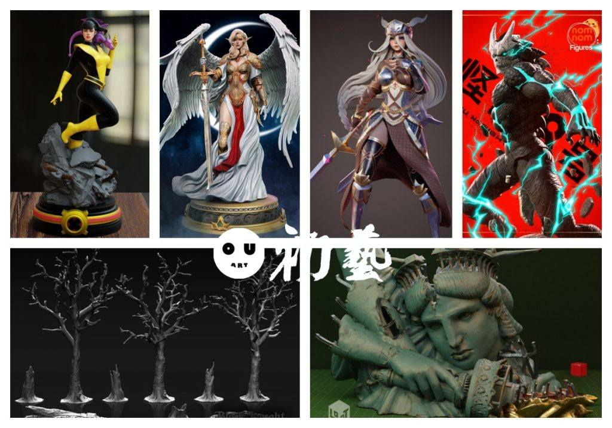
1.幻影猫，雕像设计，漫威粉丝向，有多形态。
链接：https://pan.baidu.com/s/1zU0N5br_D5AHyULXTVqxow
提取码：cb8j
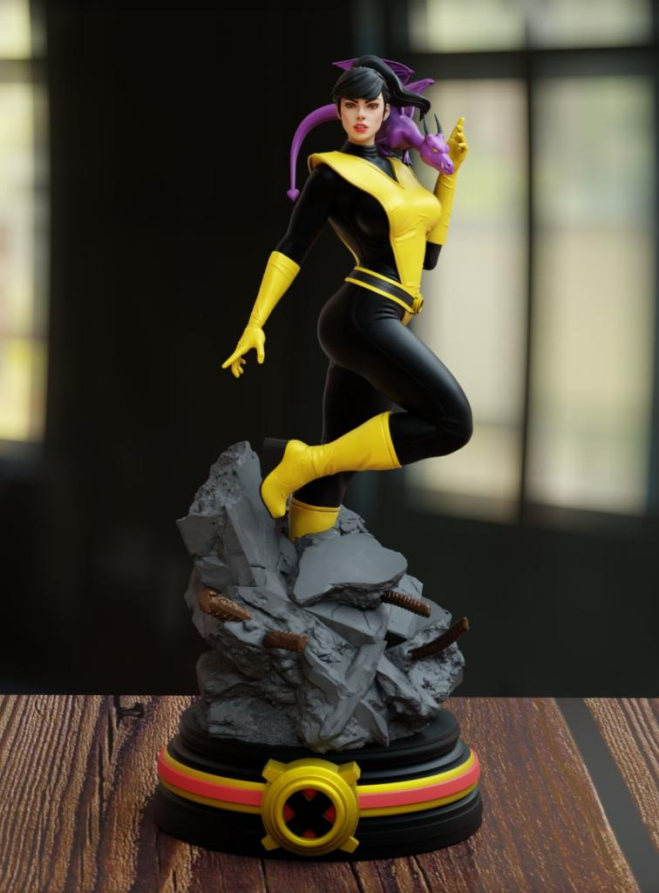
2.精灵女武神，雕像设计，精度不错，面部有肌肤刻画，分件合理。
链接：https://pan.baidu.com/s/1aYG3XsbQTPmWbgG_3zqTpQ
提取码：1nmj
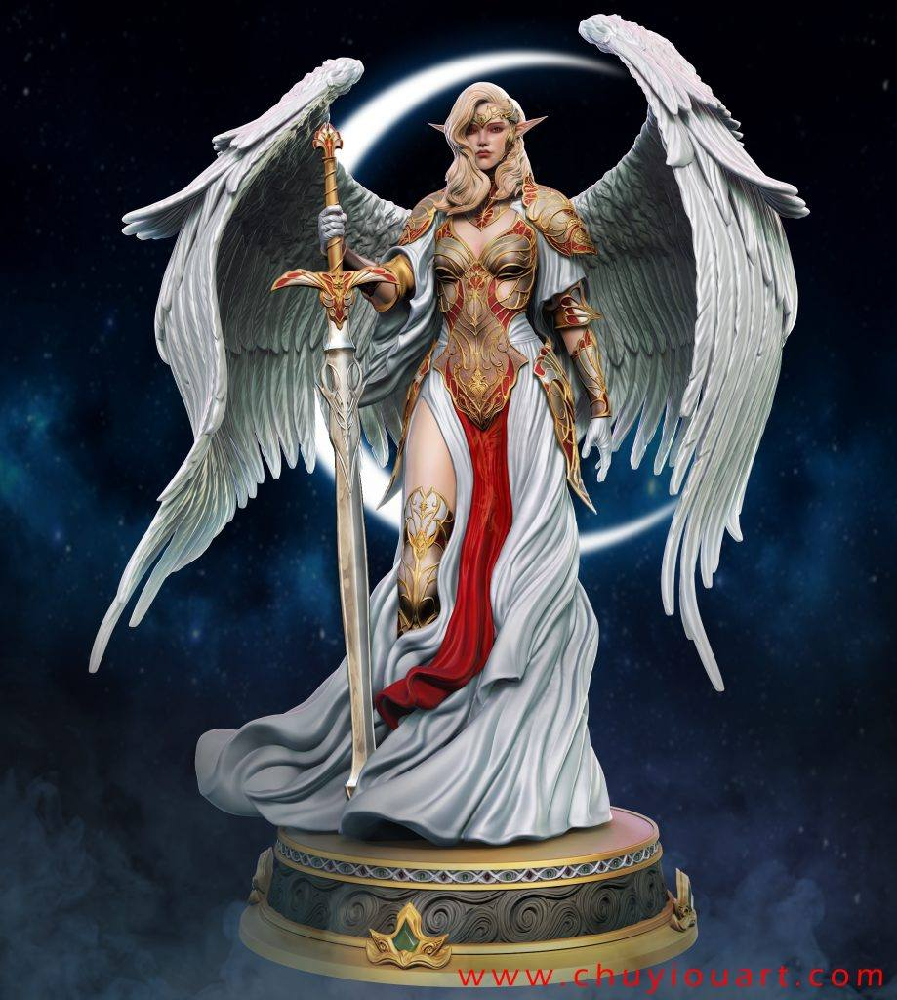
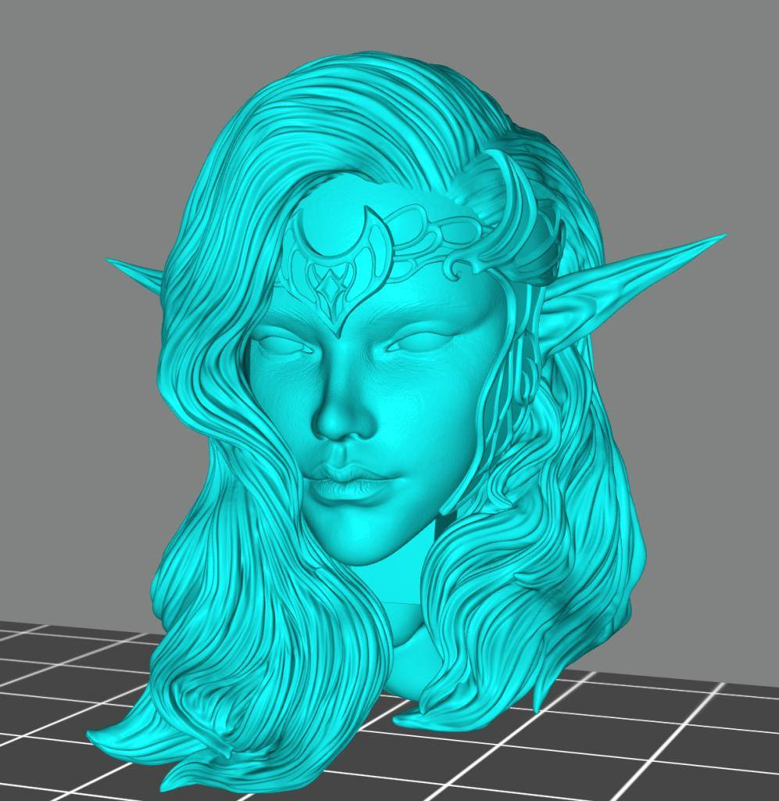
3.北欧女神蕾娜丝，这个其他平台也能找到，感觉还可以的模型，分享一下。
链接：https://pan.baidu.com/s/12ck_9o9e1QPl62c2IX46dg
提取码：499e
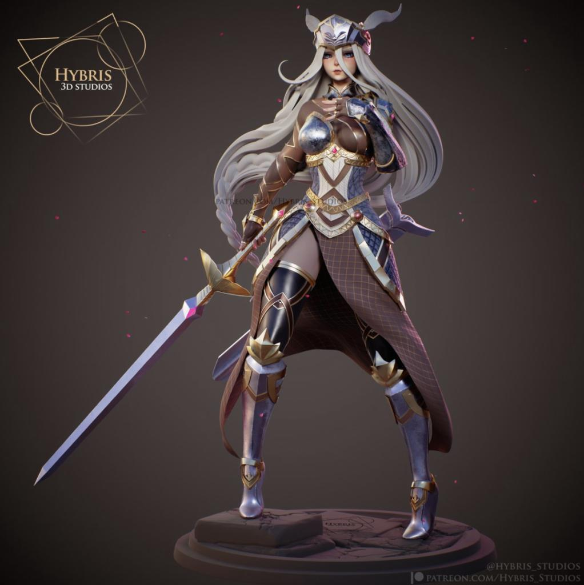
4.怪兽8号，nomnom出品，做的不错，还原度高。
链接：https://pan.baidu.com/s/1w8DJIBCc-Chz5aPyhEBU8w
提取码：ysi4
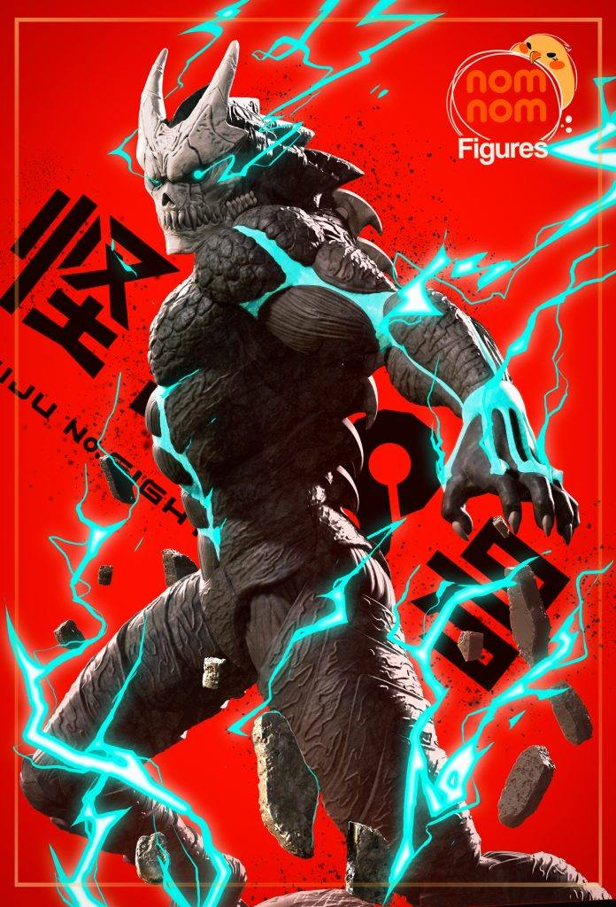

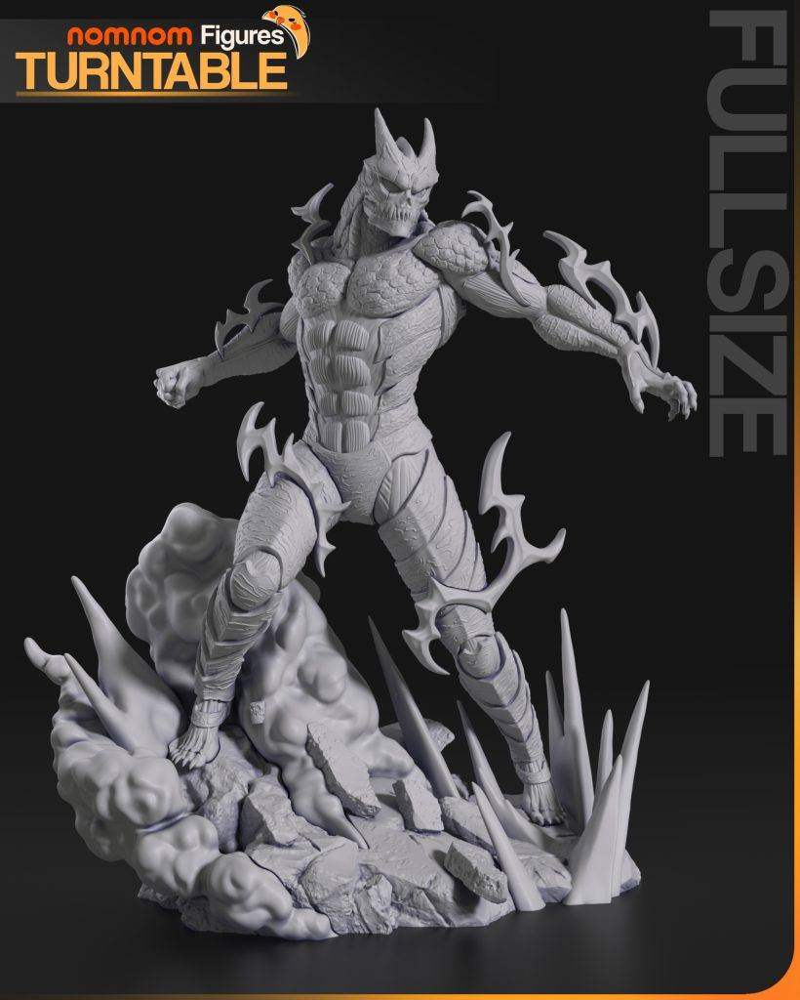
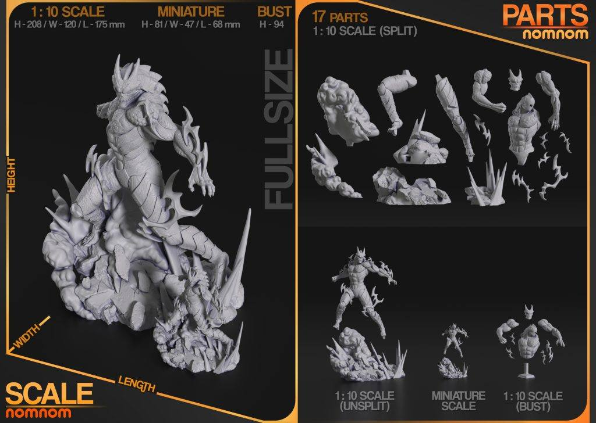
5.树素材，暗黑风格，以后这类素材应该开专题放在一起，做场景很用。
链接：https://pan.baidu.com/s/1EaW0_x0p314sRxdx_ZUOtA
提取码：9w2m
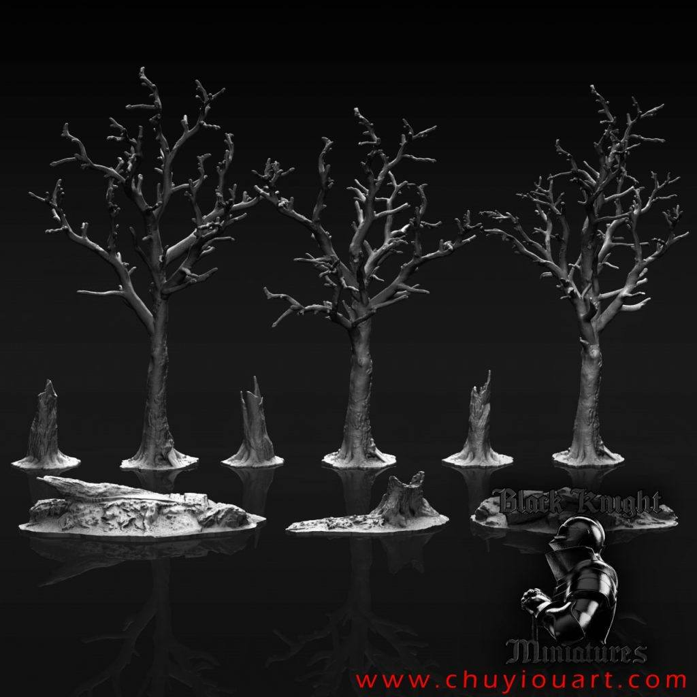
6.破损自由女神，适合做场景和改造，精度还不错，有详细的分件。
链接：https://pan.baidu.com/s/1NL9yLipqe2IoDc-s_KfOMg
提取码：igw8
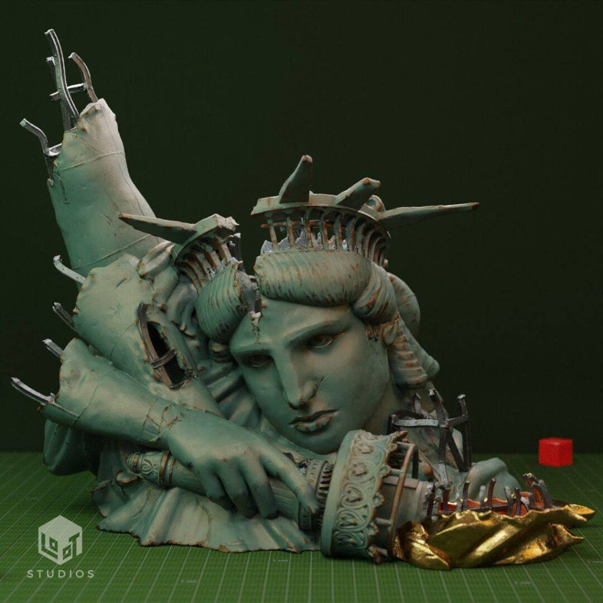
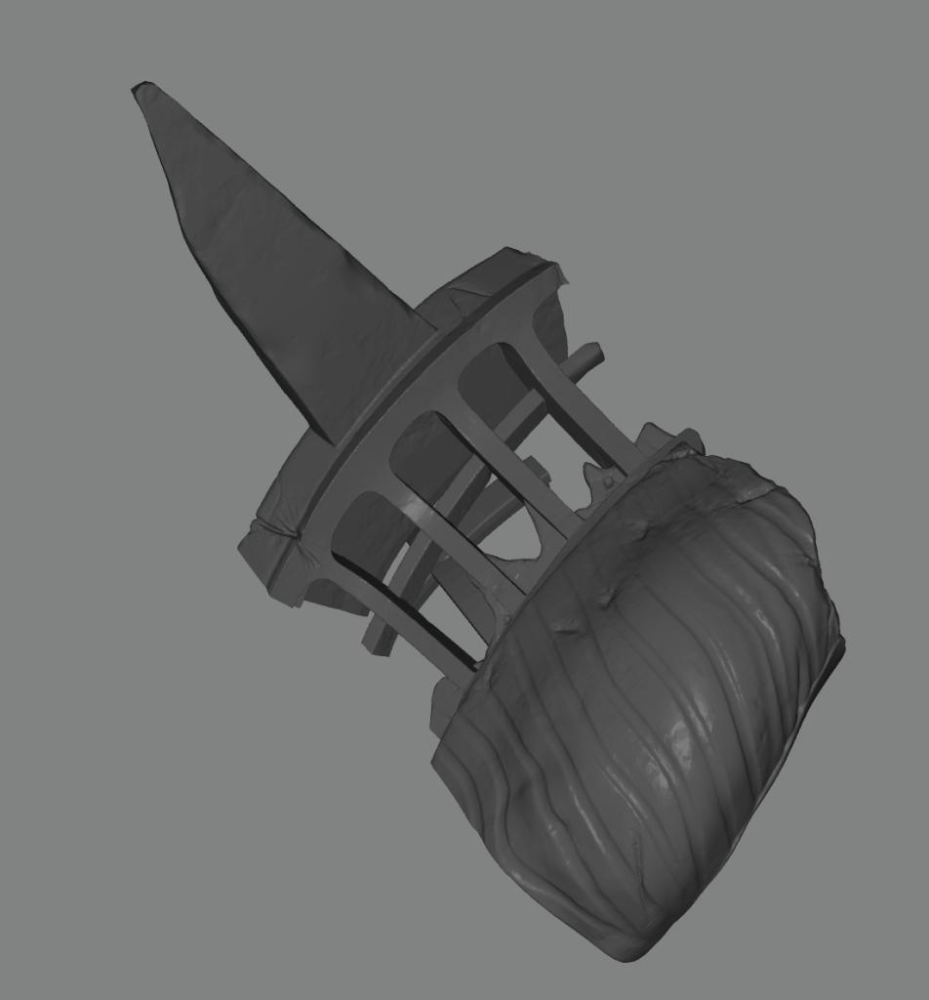
以上内容仅供个人使用（非商用）
ONLY for PERSONAL (NON-COMMERCIAL) use.
加群获得更多免费模型！